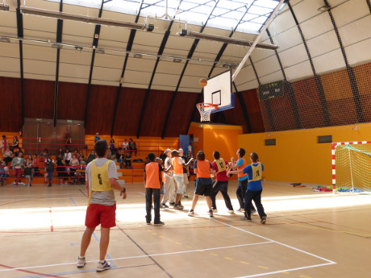
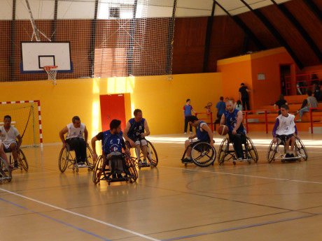

| Fête du sport 2015 |
|
| Vendredi, 26 Juin 2015 00:00 | ||||||||||||
Mardi 30 juin 9h15 à 12h45 : épreuves sportives Koh-lanta (l’épreuve ultime)
Mercredi 1er juillet de 10h à 12h, finale du tir à l’arc
Jeudi 2 juillet 9h30 à 12h30, football De 13h30 à 15h45, base-ball
Vendredi 3 juillet 11h à 12h remise des récompenses  
Fête du sport du 25 juin au 3 juillet La fête du sport est terminée, nous pouvons faire un premier bilan. Douze activités ont été organisées : Parcours moteur, animations sportives et natation destinées plus particulièrement aux unités éducatives Basket fauteuil, basket, Koh Lanta, Hockey, tir à l’arc, football, base – ball, badminton 550 participants toutes activités confondus ont participé et 50 adultes soit 600 participants. L’établissement comme tous les ans a invité des établissements de la région : IME Toulouse Lautrec à Aulnay sous Bois, EMP de Livry-Gargan, Fondation Rotschild à Meaux, Espace Sésame à Chelles, La Gabrielle à Claye –Souilly, IME La Tour à rebais, EPMS de Fontenay-Trésigny, La CLIS de l’école E. Varlin à Claye-Souilly, L’IME l’Eclair à Collégien
|
||||||||||||
| Mise à jour le Jeudi, 22 Octobre 2015 18:39 | ||||||||||||